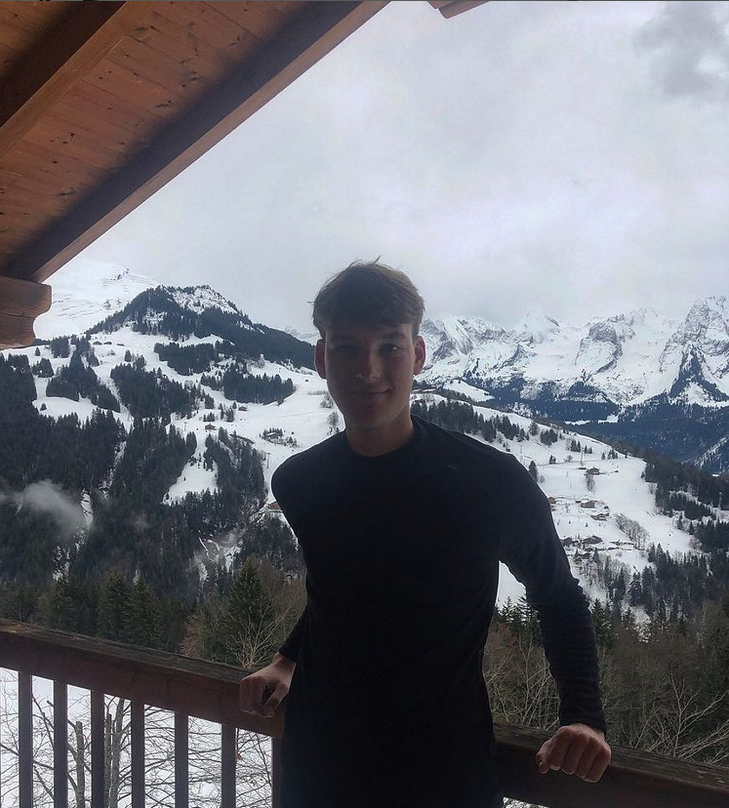

<!DOCTYPE htlm>

<htlm>

<head>
<title>Pierre Milton's Profile</title>
<meta name="description" content="This is the profile of Pierre">
<meta charset="UTF-8">
<link rel="stylesheet" href="style.css">
<script src="https://kit.fontawesome.com/10c2da918c.js" crossorigin="anonymous"></script>
<link rel="preconnect" href="https://fonts.googleapis.com">
<link rel="preconnect" href="https://fonts.gstatic.com" crossorigin>
<link href="https://fonts.googleapis.com/css2?family=Cormorant+Garamond:wght@300&family=Montserrat:wght@500&family=Oswald:wght@500&display=swap" rel="stylesheet">
<link rel="preconnect" href="https://fonts.googleapis.com">
<link rel="preconnect" href="https://fonts.gstatic.com" crossorigin>
<link href="https://fonts.googleapis.com/css2?family=IBM+Plex+Serif:wght@500&family=Lato&display=swap" rel="stylesheet"> 
</head>

<body>
  <div class="container">
      <div class="card-white" id="intro">
    <h1>Pierre Milton</h1>

<p>Actuellement étudiant à l’IÉSEG Lille, je suis motivé et curieux à l’idée de diversifier mes expériences professionnelles et de développer mes compétences. Mes quelques expériences passées m'ont permis d’acquérir un savoir-être au sein d’une entreprise et une capacité  à travailler en équipe. Réactif et organisé, je saurai faire preuve d’efficacité dans mon travail et satisfaire vos attentes. De ce fait, je suis ouvert à toutes propositions, pendant l'année scolaire, de travail aux horaires flexibles, et de stage « d’ouverture professionnelle » sur la période mai-juin-juillet 2022</p>
<a href="https://www.ieseg.fr/" class="blue-btn" target="_blank">IESEG</a>

  </div>

<div class="card-white">

  <h2>Formations</h2>
  <ul class="no-decoration">
    <li><span class="underline"><strong>2021 :</strong> </span> IÉSEG, Lille, première année du programme grandes écoles </li>
    <li><span class="underline"><strong>2018-2021 :</strong></span> Lycée René Descartes, Saint Genis Laval - Option Mathématiques, Sciences économiques et sociales et Physique Chimie 
              Obtention du Baccalauréat Mention très bien 
    </li>
    <li><span class="underline"><strong>2014-2018 :</strong></span> Collège Jean-Zay, Brignais
              Obtention du Brevet des Collège Mention très bien</li>


</div>

<div class="card-white">

  <h2>Expériences Professionnelles</h2>
  <ul class="no-decoration">
    <li> <span class="underline"><strong>Mars 2020 à Juillet 2021 :</strong></span> Ouvrier et Opérateur de la machine laser –Intérimaire chez Aero Textile Concept, Brignais </li>
    <li><span class="underline"><strong>Juillet 2020 :</strong></span> Comptabilité fournisseur et analyse de projet – Stage- Modaal, Lyon
    </li>
    <li><span class="underline"><strong>Février 2018 :</strong> </span> Apprenti pâtissier – Stage de découverte – La Minaudière, Lyon </li>

  </ul>
  

</div>

<div class="card-white">

  <h2>Langues parlées</h2>
  <ul class="no-decoration">
    <li> Français (langue natale)</li>
    <li> Anglais (B2)</li>
    <li> Espagnol (B1)</li>
    <li> Mandarin (Notion)</li>
  </ul>
  


</div>

<div class="card-white">

  <h2>Vous pouvez me contacter sur : </h2>
<ul class="list-inline">

  <li>
    <a href="https://www.linkedin.com/in/pierre-milton-6915a11b6/"target="_blank"><i class="fa-brands fa-linkedin"></i></a>
  </li>
  <li>
    <a href="https://www.instagram.com/pierre.mltn/?hl=fr"target="_blank"><i class="fa-brands fa-instagram"></i></a>
  </li>
  <li>
    <a href="https://www.facebook.com/profile.php?id=100006875013779"target="_blank"><i class="fa-brands fa-facebook"> </i></a>
  </li>
</ul>

</div>

</div>
</body>
</html>